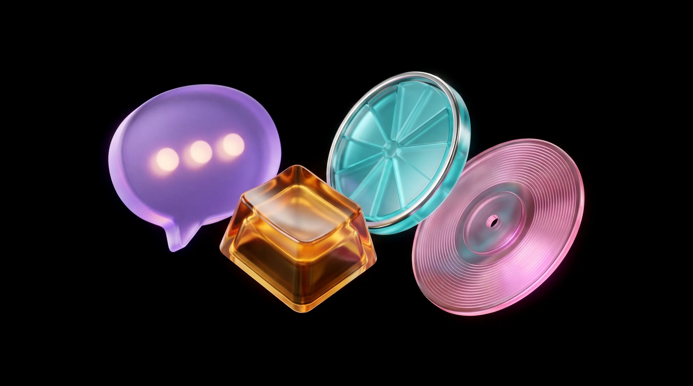
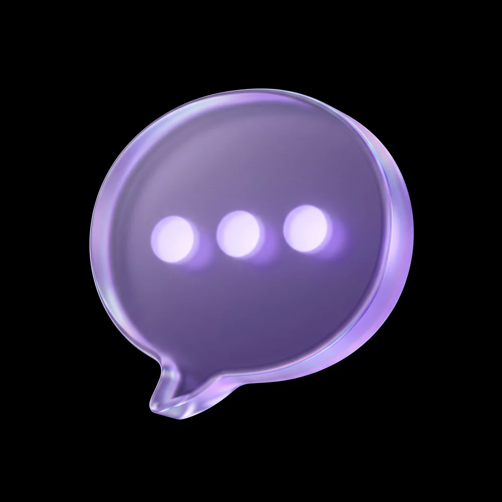
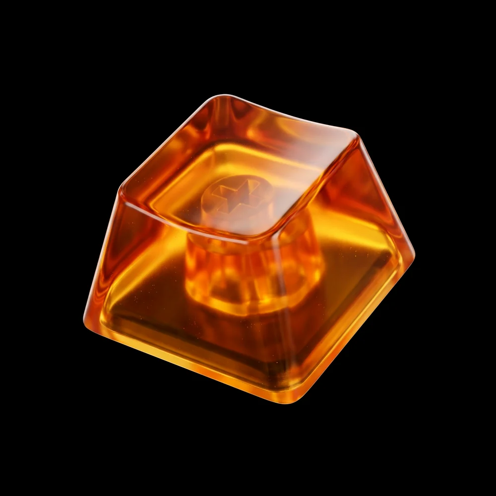
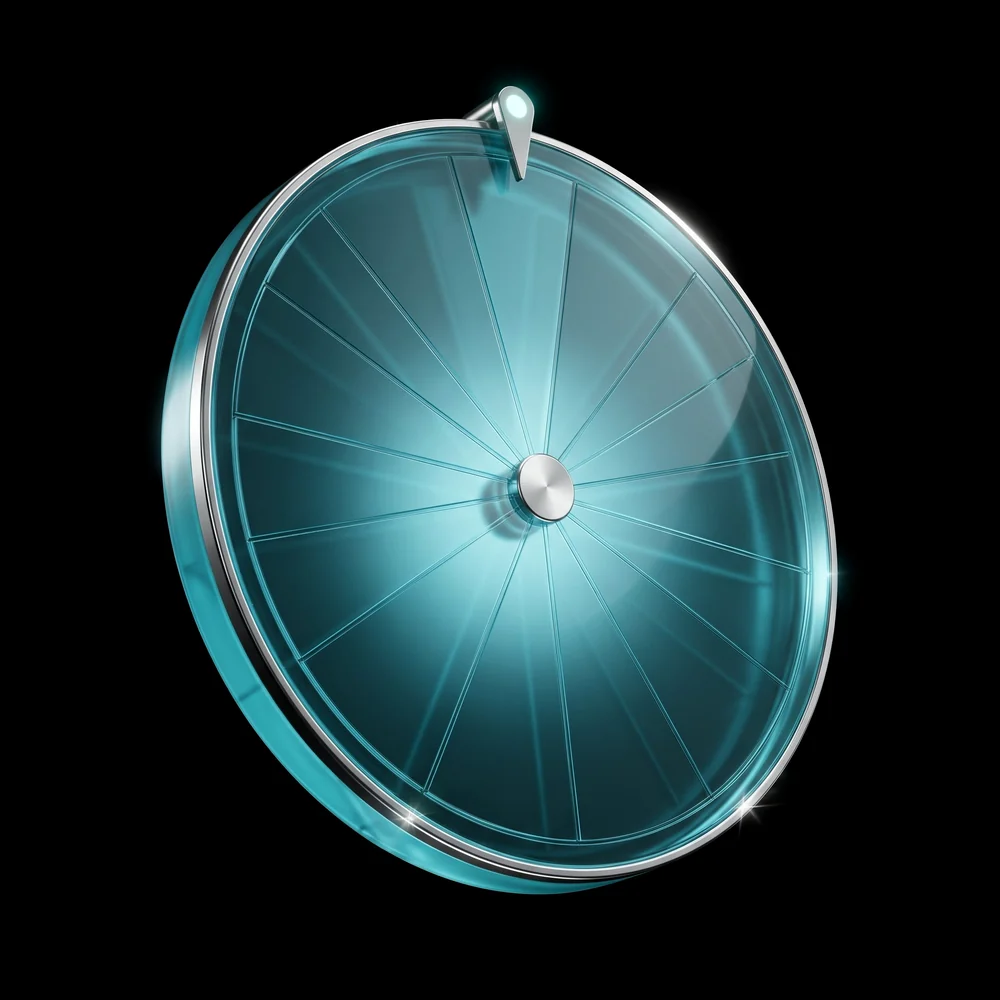
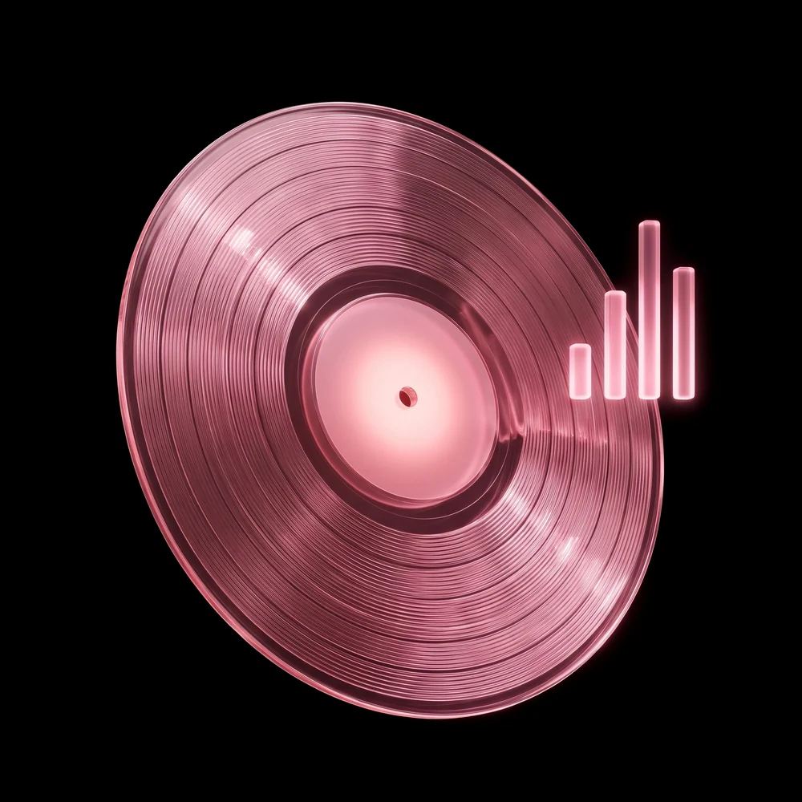
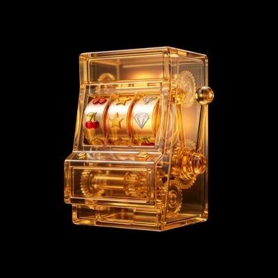
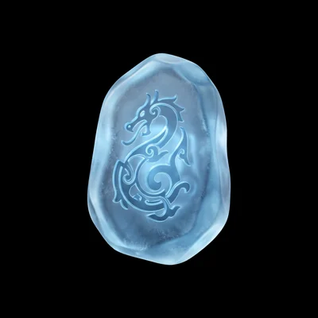

Программы для стрима
Делаю их сам для своего канала, где играю в Deadlock. Чат-оверлей и Chatlock можно бесплатно поставить себе.


Twitch Chat Overlay
Чат любого канала поверх игры. Читаешь, что пишут, и не сворачиваешь Deadlock.
- Несколько каналов во вкладках, смайлы Twitch и 7TV.
- F9 оставляет только текст, F8 пропускает клики сквозь окно.
- Один файл без установки. Войти в Twitch нужно, только чтобы писать.

Chatlock
Зрители за баллы канала или донат жмут клавиши у тебя в Deadlock: прыжок, ульта, перепутанный WASD.
- Любой награде можно поставить цену в рублях через DonationAlerts.
- Жмёт, только когда игра на экране. Иначе баллы возвращаются.
- Кто что нажал, видно прямо на стриме.

Колесо хаоса
Колесо фортуны на мини-карте. Зрители крутят его за баллы, а выпасть может что угодно, от VIP до перепутанных клавиш у меня в игре.
- Полная банка душ превращает его в колесо хаоса на 10 минут.
- Чат-RPG на душах: фракции, герои, босс, урна, магазин.
- Ставки на мои матчи открываются и закрываются сами.

Now Playing
Плашка «сейчас играет» для OBS. Трек из YouTube Music или любого плеера, с обложкой.
- Заказали трек в Trula: твоя музыка встаёт на паузу и потом играет дальше сама.
- Одна плашка и для своей музыки, и для заказов.
- Картинка вместо вебки, которая открывает рот, когда ты говоришь.
Сделано для других стримеров
Эти сборки живут на чужих каналах. Хочешь что-то похожее себе, пиши в Telegram.
-

DeadlockТиммикЛудик и Лудочка
Казино в чате на баллы канала: слот-машина, общий банк, VIP-джекпот и эффекты прямо в Deadlock. Две версии, для qissme_ и censorxxx.
-

SkyrimThu'um
Skyrim, в котором NPC отвечают голосом нейросети, а зрители за баллы говорят за героя.